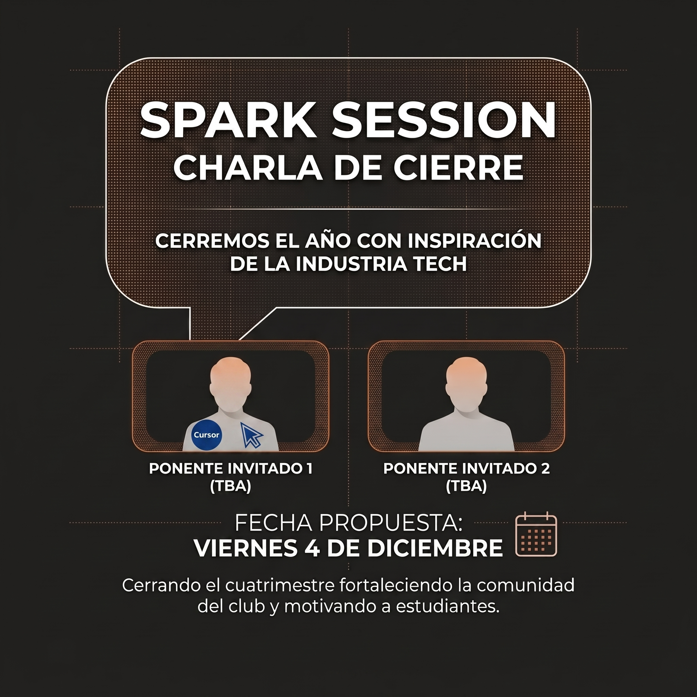

Cerramos el cuatrimestre con una conferencia inspiradora de profesionales de la industria tecnológica.

Haz clic en la imagen para verla en pantalla completa
Fecha
Viernes 4 de diciembre
Formato
Conferencia + networking
Invitados
Profesionales de la industria
Público
Comunidad LEAD
Objetivo del evento
Cerrar el año con una conferencia inspiradora impartida por uno o dos profesionales de la industria tecnológica, acercando a los estudiantes a experiencias reales y a las tendencias actuales del sector. La idea es finalizar el cuatrimestre fortaleciendo la comunidad y motivando a seguir desarrollando habilidades técnicas y profesionales durante el próximo año.
Qué incluye
Conferencia inspiradora de uno o dos invitados de la industria.
Tendencias actuales, casos reales y lecciones del día a día profesional.
Ronda de preguntas y respuestas con el público.
Espacio de networking de cierre del cuatrimestre.
Balance del año del club y lo que viene en el siguiente cuatrimestre.